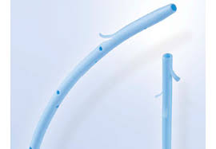

| Técnicas utilizadas para la fabricación del órgano | |
|
Las prótesis páncreaticas se pueden realizar de metal o plástico depende del requerimiento o complicación de la enfermedad. Estas prótesis, consistentes en unos dispositivos tubulares mezcla de diferentes materiales (teflón, polietileno o vinilo, hechas a medidas del paciente), se colocan en el conducto pancreático durante las colangiografías retrógradas endoscópicas. Sin embargo también existe un páncreas artificial es una tecnología en desarrollo para ayudar a las personas con diabetes a controlar automáticamente sus niveles de glucosa en la sangre proporcionándoles un substituto endócrino con las funciones de un páncreas saludable. Compuesto por un monitor de glucosa, un algoritmo y una bomba de insulina. Este ayuda a combatir la diabetes tipo 1. |
 |